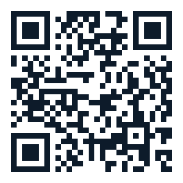

KOTITI TEST REPORT
KOTITI 시험성적서
신뢰할 수 있는 시험기관의 엄격한 품질 검증을 통과한 안전 원단입니다.
방염시험
적합
소방청 기준 충족 · 화재 안전 기준 적합 판정
포름알데히드
검출 안됨
16mg/kg 미만 · 유아용 섬유제품 안전 기준 충족
인장강도
990N / 1,000N
높은 내구성 · 장기 사용 적합
마찰견뢰도
4–5등급
건조·습윤 조건 모두 우수
혼용률
100% Polyester
정확한 소재 표기 확인
인증 마크
KC · KATRI · ISO
E0 등급 · FIRA 국제 인증
